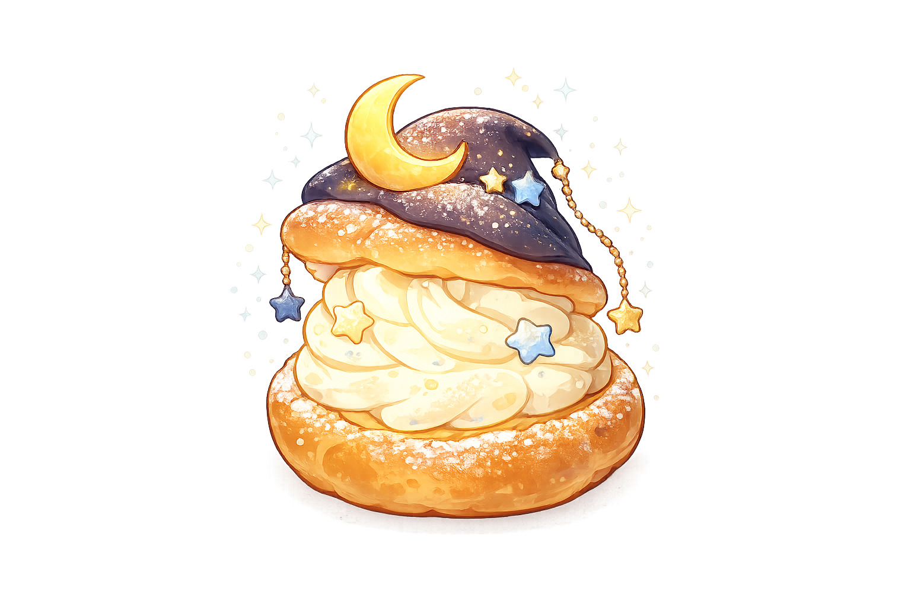

그림책 연계 참여 활동
나만의 슈
찾기 프로젝트
어느 날, 빵집 진열대에 홀로 남겨진 작은 슈크림이 되었습니다.
선택받지 못한 채 밖으로 나온 당신은,
이제 자신만의 길을 찾아 떠나려 합니다.
당신은 어떤 슈가 될까요?
1 / 6
첫 번째 밤
당신의 슈가 완성되었습니다
딸기슈
F - S - E
별명
따뜻한 공감가
당신의 특징
이후 이야기
오늘의 슈 분포
총 0개의 결과
통계에는 이 기기에서 처음 완성한 결과만 반영됩니다.
통계를 불러오는 중...